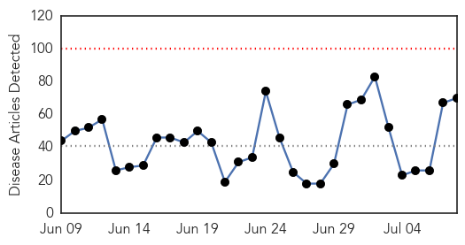
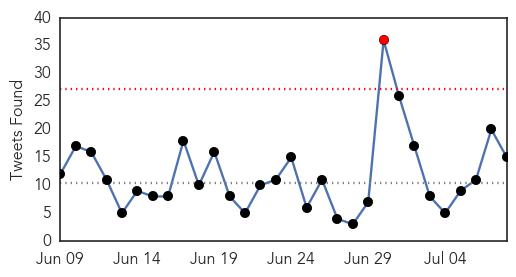
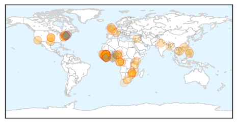

30 Day Trends
Web: 0 alerts, 0 warnings
Twitter: 1 alerts, 0 warnings
Top Articles:
- 1.000
- The Ebola virus has spread to Senegal as the deadliest outbreak in history gets worse
- 1.000
- World Health Organisation slammed on Ebola response
- 1.000
- Fund health infrastructure to avert epidemics
- 1.000
- 2nd Ebola Case Declared as Health Workers Protest
- 1.000
- Liberia Records Ebola Death After Country Declared Virus-Free
- 1.000
- Zimbabwe Daily – Your News! Your Views! Your Life!
- 1.000
- Why Canada Needs a Radically Changed World Health Organization
- 1.000
- Liberia confirms third Ebola case in new outbreak
- 0.999
- Liberia confirms third Ebola virus case
- 0.999
- Initial Ebola test on Liberia dog carcass negative - sources
- 0.999
- Source of new Liberian Ebola outbreak a mystery: WHO - Liberia
- 0.999
- Source of new Liberian Ebola outbreak a mystery: WHO
- 0.998
- President Mugabe in US for Ebola summit
- 0.998
- N.J. man has malaria, not Ebola
- 0.998
- Lack of people, supplies and money plague Africa's Ebola fight-experts
- 0.998
- Military personnel returning to US pose low risk for Ebola transmission
- 0.998
- Reemergence of Ebola epidemic in Liberia, test on dog carcass tested negative, for now
- 0.997
- Lack of people, supplies and money plague Africa's Ebola fight-experts
- 0.997
- Lack of people, supplies and money plague Africa's Ebola fight
- 0.997
- Second Ebola Case Confirmed In Liberia
- 0.996
- Lack of people, supplies and money plague Africa's Ebola fight: experts
- 0.994
- Report Says Ebola Response Flawed
- 0.994
- Report: Politics factored into UN's botched Ebola response
- 0.994
- Ebola Monitoring in Texas Expires for Some
- 0.994
- BBC News: WHO ‘unfit for health emergencies
- 0.993
- Ebola ruled out for NJ man with like symptoms
- 0.993
- Report calls for urgent change at WHO, following inadequate Ebola response
- 0.992
- Scathing Report on Ebola Urges Major Changes at World Health Organization
- 0.991
- WHO ‘unfit for health emergencies’ — Talk Vietnam
- 0.991
- WHO ill-equipped to handle a crisis like Ebola, report says
- 0.991
- Sierra Leone extends Ebola curfews indefinitely - Sierra Leone
- 0.991
- WHO 'Unfit For Health Emergencies'
- 0.989
- Mugabe in New York for Ebola Summit
- 0.987
- Panel finds politics botched U.N. agency's response to Ebola
- 0.986
- Building bridges after Ebola: how local peacebuilders are helping to prevent conflict in Sierra Leone - Sierra Leone
- 0.985
- WHO is not equipped to handle a crisis like Ebola, report says
- 0.984
- UNICEF teams, supplies arrive in areas affected by new Ebola cases in Liberia
- 0.978
- Ebola ruled out in case of sick Neptune man
- 0.978
- Ebola ruled out in case of sick Neptune man
- 0.968
- Kenya : Countries most affected by Ebola lobby for funding for infrastructure
- 0.966
- New Jersey Ebola Scare Is Over, Man Tests Positive for Malaria
- 0.964
- Statement on the 6th meeting of the IHR Emergency Committee regarding the Ebola outbreak
- 0.954
- African countries react to report on WHO bungling Ebola response
- 0.950
- Infectious Diseases « mykeystrokes.com
- 0.943
- WHO ‘failed’ in Ebola outbreak
- 0.942
- Former Hong Kong health director Margaret Chan comes under fire over WHO leadership during Ebola crisis
- 0.940
- WHO, not fit and inadequate in responding to the Ebola crisis
- 0.939
- President Koroma faces protest at upcoming International Ebola Recovery Conference in New York
- 0.938
- Health and Sanitation Minister, Dr. Abu Bakarr Fofanah, appointed Founding Co-Chairman of the World Medicine Summit
- 0.937
- ‘Visiting President’ leaves for New York
Showing top 50 articles...
Top Tweets:
- 0.996
- Experts Say World Health Organization Unable to Handle Ebola Outbreak - Newsweek http://t.co/SZjqMjLHCG ebola EVD
- 0.996
- Ebola Vaccine Components Do Not Cause Ebola Disease! - GhanaWeb http://t.co/C8RNHkZerA ebola EVD
- 0.981
- Scathing report on Ebola urges major changes at World Health Organization - Emergency Management http://t.co/fxAj0Bl0Iz ebola EVD
- 0.962
- Experts Say World Health Organization Unable to Handle Ebola Outbreak - Newsweek http://t.co/K4dldFkqwd
- 0.937
- Ebola cases evade detection due to ongoing lack of trust in communities – UN - UN News Centre http://t.co/IzNbR7VAG3 ebola EVD
- 0.908
- Lack of people, supplies and money plague Africa's Ebola fight: experts - Reuters http://t.co/Ze1sgO7blN ebola EVD
- 0.908
- Lack of people, supplies and money plague Africa's Ebola fight - experts - Reuters http://t.co/tNGEKxn37D ebola EVD
- 0.896
- NJ Health Dept.: Ebola ruled out in Hazmat scare in Lakewood - Asbury Park Press http://t.co/32Rxhk6yMl ebola EVD
- 0.891
- LISTEN: More on a damning report served on the World Health Organisation after its failings over the ebola outbreak. http://t.co/ympOk15OW0
- 0.890
- SierraLeone. There’s a health crisis in West Africa – and it’s not Ebola http://t.co/eTJoBjUnNW
- 0.868
- RT: "Ebola ravaged skilled human resources." Read our latest blog "Beyond Ebola: a time for action in SierraLeone": http:…
- 0.851
- After Ebola outbreak missteps, @WHO must re-establish itself as 'guardian of global public health' – review panel https://t.co/oMr2RGoKR3
- 0.840
- RT: Today's Ebola executive summary: cases grow in new Liberia cluster, and five new cases in Sierra Leone since July 1 http…
- 0.834
- Rapport du Groupe d’experts chargé de l’évaluation intérimaire de la riposte à Ebola http://t.co/uvMH6K2cLL
- 0.793
- Today's Ebola executive summary: cases grow in new Liberia cluster, and five new cases in Sierra Leone since July 1 http://t.co/pMImOBkw4t
- 0.767
- Avant la phase de résidence d'Africa Stop Ebola qui aura lieu du 21 au 27 juillet à Conakry, nous vous présentons... http://t.co/YSajcCUx0C
- 0.714
- RT: Two more Liberia Ebola cases as Guinea, Sierra Leone log 27 http://t.co/vYqIJuBHok
- 0.711
- Ebola: @WHO says more cases (30) in the past wk than since mid-May. Still unclear how virus returned to Liberia. Maybe be 4th case there.
- 0.680
- Crews Respond to New Jersey Wawa After Person Displays Ebola-Like ... - NBC 10 Philadelphia http://t.co/N6pk5s0Trf ebola EVD
- 0.680
- Crews Respond to New Jersey Condo After Person Displays Ebola-Like ... - NBC 10 Philadelphia http://t.co/e1CFJVGZDw ebola EVD
- 0.676
- Initial Ebola test on Liberia dog carcass negative http://t.co/X2PesYLtbl via
- 0.666
- Utility of OralSwab Sampling for Ebola Virus Detection in Guinea Pig Model http://t.co/boVYUOr7dA
- 0.663
- Building Back Stronger Communities After Ebola - International Federation of Red Cross and Red Cre... http://t.co/h79PYtwc4s ebola EVD
- 0.622
- .@TheEconomist provides a look at the latest toll of the Ebola epidemic http://t.co/lDvlBjT4kg
- 0.618
- 8 July - news pouch on avianflu avianinfluenza Ebola EbolaResponse MERS is here: http://t.co/hfSdGAJZa1
- 0.607
- EbolaResponse Flashback 15 Oct 2014: Emergency supplies are loaded for distribution to the Ebola affected countries http://t.co/6WnCSQFuki
- 0.605
- Gambia. Health Ministry Updates Media On Ebola http://t.co/O0NnmlD3jJ via
- 0.594
- The experience of malaria helped stop the Ebola epidemic affecting Senegal https://t.co/WzUfT5VEVz
- 0.591
- The Ebola outbreak is not over yet. The WHO EbolaResponse continues, until GettingtoZero. http://t.co/paO4DGT2c6 http://t.co/cBZJDBv21e
- 0.557
- RT: The Ebola outbreak is not over yet. The WHO EbolaResponse continues, until GettingtoZero http://t.co/paO4DGT2c6 http://t.co/bqo…
- 0.536
- Prioritizing psychosocialsupport for people affected by Ebola in SierraLeone http://t.co/5I1K79bC9X
- 0.529
- Liberia: Building back stronger communities after Ebola https://t.co/HaLTG1lobU via
Web/News Articles
Tweets
Article Locations
Article Confidences